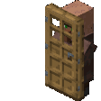

★ D a i l y  P l a n e t ★
P l a n e t ★
P l a n e t ★VOL, LXIII - NO.60,002 ------ METROPOLIS ---------- $67
P l a n e t ★Que es esta pagina?
Dada mi soledad actual he decidido que necesito un lugar para vaciar mi mente y poder expresarme libremente, puesto que no tengo las habilidades plasticas para un diario decorado con recortes y sum shit y se supone que tengo carrera tecnica de programacion, decidi hacer esta pagina lol, voy a poner analisis a distintos medios que vaya consumiendo y puesto que estoy seguro que nadie leera esta pagina, usarlo como diario y escribir pensamientos, ideas y proyectos conforme vengan a mi mente lol
Presentacion
Holol, soy yo, como sabran soy fan de superman, en general fan de los comics y contenido capeshit(de superheroes), de transformers y star wars, en general me gusta mucho la fantasia y la ciencia ficcion, el arte como forma de expresion, como espectador especialmente de la pintura/dibujo, cine y literatura, pero me gusta escribir especialmente poemas o ciencia ficcion y fantasia, me gusta mucho la tecnologia y las ciencias aplicadas, seguramente pase los ultimos años de mi vida solo en un laboratorio creando robots que me hagan compañia lol
Mi sueño es hacer el mundo un lugar mejor 
★CONTACTO:
★Instagram: @Juliolpdm ★Telefono (doxxeo free idgaf) ★Spotify lol
He estado escribiendo mucho como me siento en poemas (en ingles para sentirme mejor con ello) y queria empezar a hacer lo mismo con el resto de mi mente, lo haria en obsidian o en algun editor de texto pero no tienen tanta personalidad, sanford me dio la idea de un diario para hacer collages y decorarlo mas pero perdi mi dedo indice y nunca tuve buena caligrafia, entonces se me ocurrio hacer esto lol, aparte explorar el hosting de github para otras cosas
Tambien lo voy a usar para planear proyectos aunque la documentacion al respecto va a estar en otros espacios, quiero guardar mucho de ello aqui, por ejemplo, trabajar mas en solus, en solaris y en proyectos mas de ingenieria que vaya haciendo
ademas me sirve por que no he programado desde 4to semestre xd


Y a veces el jugador creía que el universo le habló a través de la luz que sintió del fresco cielo nocturno del invierno, donde una mota de luz en el rabillo del ojo del jugador pudo ser una estrella un millón de veces más masiva que el sol, hirviendo sus planetas hasta hacerlos plasma para ser visible para el jugador por un momento, caminando hacia casa en un rincón alejado del universo, de repente oliendo comida, casi delante de su familiar puerta, a punto de soñar otra vez.
Y a veces el jugador creía que el universo le habló a través de ceros y unos, a través de la electricidad del mundo, a través de las palabras que se desplazan por una pantalla al final de un sueño.
Y el universo dijo Te amo.
Y el universo dijo que jugaste bien al juego.
Y el universo dijo que lo único que necesitas está en ti.
Y el universo dijo que tú eres más fuerte de lo que sabes.
Y el universo dijo que tú eres la luz del sol.
Y el universo dijo que tú eres la noche.
Y el universo dijo que la oscuridad con la que luchas está en ti.
Y el universo dijo que la luz que buscas está en ti.
Y el universo dijo que tú no estás solo.
Y el universo dijo que no estás separado de todas las demás cosas.
Y el universo dijo que tú eres el universo probándose a sí mismo, hablándose a sí mismo, leyendo su propio código.
Y el universo dijo Te amo, porque tú eres el amor.
Y el juego se terminó, y el jugador despertó del sueño. Y el jugador empezó un nuevo sueño. Y el jugador soñó otra vez, soñó mejor. Y el jugador fue el universo. Y el jugador fue el amor.
Tú eres el jugador.
Despierta.
Voy a subir analisis breves o ensayos de los libros que lea y me den ganas de escribir al respecto, por la division con los comics, sera literatura mas clasica o a lo mejor algo de star wars
Voy a usar esta seccion como mi letterbox personal, tambien voy a incluir series para no hacerles una seccion aparte